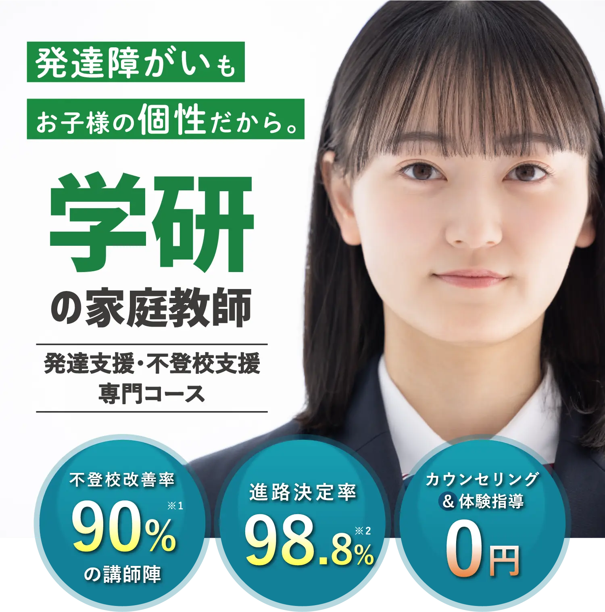
※1 学研グループのWILL学園の実績です。 ※2 自社調べ

学研グループでは
発達障がいのお子様に特化した
学習支援を行っております。
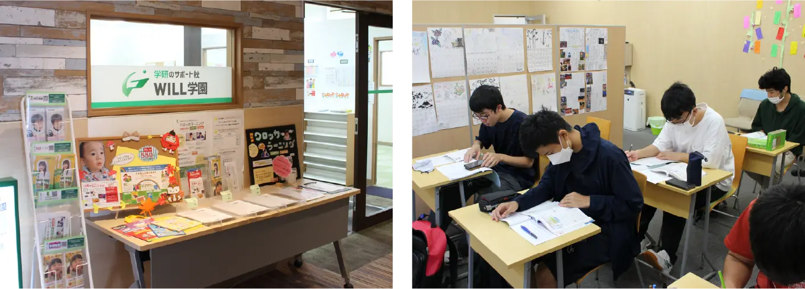
不登校の中高生の居場所づくりをおこなう「WILL学園」を全国で運営しており、発達障がい・不登校のお子様が多数在籍しております。これまでに数多くの卒業生を送り出してきた中で培ったノウハウを生かし、発達障がいのお子様向けに特化した個別指導の家庭教師サービスもご提供しております。
生徒様・保護者様の声
心強いサポートで不安が和らぎ、
娘の成長を楽しめるように！
娘の成長を楽しめるように！
※プライバシーに配慮して、画像はイメージです。
ASD（自閉スペクトラム症）を持つ中学1年生の娘は、入学後すぐにイジメや授業のプレッシャーから引きこもりになってしまい、親としてもどう接したら良いのか手探りの状態でした。
そんな時、インターネットで学研さんの存在を知り、ご相談させていただきました。まさか自分の子が引きこもりになるとは思ってもおらず、とても焦っていたのを覚えています。
初めて来ていただいた時、娘は話すことも難しくて不安そうでしたが、学研さんの先生は優しく接してくれ、信頼を築いていきました。先生は娘の個性を理解し、学習面だけでなく内面まで丁寧にサポートしてくれました。日々の悩みはもちろんのこと、苦手教科が「なぜ苦手に思うのか」などに耳を傾け、柔軟なアプローチで対応してくれました。また、先生は私たち親にも不安や疑問に対して親身になって話を聞いてくれ、適切なアドバイスをいただきました。
先生が来るようになってから娘は少しずつ表情が明るくなり、安心感を感じている様子でした。娘が前向きに学習に取り組むようになり、自信を取り戻していく様子は、学研さんのサポートがあったからこそだと感じています。特に、こだわりが強い娘のペースを尊重しながら学習プランを組んでくれたことが良かったです。娘は無理なく学び、ゆっくりではありますがとても楽しみながら進んでいけています。
学研さんのサポートがなければ、私たち親も不安やストレスでいっぱいのまま過ごしていました。しかし、先生のおかげで家庭内のコミュニケーションが増え、今は娘の成長に対する期待感が日々膨らんでいます。また、最初の頃に先生が教えてくれた専門のクリニックの情報も大変助かりました。
娘は少しずつですが学校に対する不安感を和らげ、不定期ですが保健室へ通学することができるようになりました。学研さんの先生は専門的な知識と経験を持ちながらも温かい人柄で接してくれ、娘が自分らしく過ごせる環境を整えてくれました。感謝の気持ちでいっぱいです。
これからも学研さんのサポートを頼りに娘の成長を見守っていきたいと思います。学研さんの存在は私たち家族にとって心強い味方のため、これからも信頼関係を築きながら進んでいきたいです。
兄弟ともにぴったりの先生！
「さすが学研」
「さすが学研」
※プライバシーに配慮して、画像はイメージです。
兄と妹、2人とも学研さんにお世話になりました。兄は中学2年の3学期からOD（起立性調節障がい）を発症し、不登校になりました。
「学校に行きたいとは思っている」「次のテストは頑張る」と言いながらも、当日になると
結局登校できず、家族としても応援すれば良いのか「頑張らなくても良いんだよ」と声をかければ良いのか分からず路頭に迷っていました。
学研さんはとても親身になってくれ、不登校の傾向や過去に担当されていた生徒さんの進路、連携のある専門のクリニックをご紹介いただいたりと勉強だけではなく、心理面や生活面でも支えていただけたと思います。
最初は先生に顔を見せることも難しかった兄が少しずつ表情が綻んで先生を心待ちにしている姿には涙がこぼれました。中学校の担任も親身になってくれましたが、ここまで心を開いたことはありませんでした。そのおかげもあり、高校進学では希望の桃山学院高校に合格することができました。
兄の影響もあって、小6から不登校になった妹も現在進行形で学研さんにお世話になっています。こちらは、芯がしっかりしており兄と違って「学校には行きたくない」「中学校には行かない」と明確な意思表示をしておりましたので、フリースクールに在籍をさせて高校進学の時に選択肢が狭まらないように学習面・心の面のサポートをしてもらっています。
妹も先生が来るのを大変楽しみにしており、本当に毎回子どもにぴたっと合った先生をご絡介いただく様子に「さすが学研」と家族ともどもファンになっています。
これからも、引き続きよろしくお願いします。
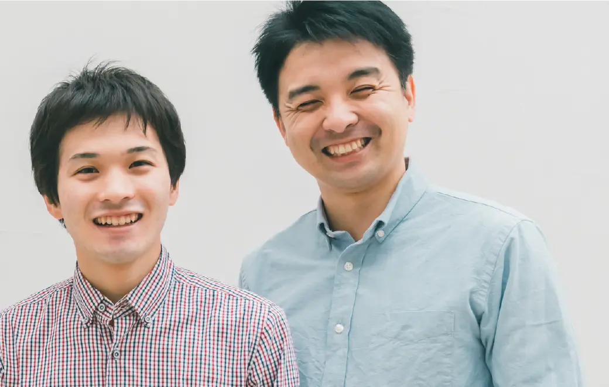
自主性・主体性がぐんと伸び、
難関大学にも合格できました！
難関大学にも合格できました！
※プライバシーに配慮して、画像はイメージです。
我が家には発達障がいの診断を受けた大学1年生の息子がおります。幼少期はとても活発で周りのお友達とも元気に交流しておりましたが、小学校高学年になると勉強の遅れや、お友達関係の違和感から支援学級への登校になりました。
担当の先生についていただいたものの、登校中ずっとという訳にはいかず自習の時間が苦痛だったようで次第に「これなら学校に行く意味がない」「家でも勉強できる」と引きこもるようになりました。
当時は私も単身赴任中だったため妻からの「今日も学校に行かない」という声にかけられる言葉もなく、夫婦ともに疲れ切っていたように思います。色々と行政で実施されている教育サービスも調べましたが、息子の中で学校や大人に対して不信感が肥大しており、親の声も聞き入れない状態でした。
中学進学後、このままではいけないと藁をもすがる思いで「不登校専門対応」を謳っておられた御社に問い合わせをしました。最初の電話対応から丁寧で「お父様、様子が類似するお子様も数多くサポートしているので大丈夫ですよ」と温かい言葉をかけていただいたことを今でも覚えています。訪問いただいた専門員の先生も知識が豊富で、「特性をしっかりと理解して、試行錯誤しながら向き合っていくことが大切」や「発達障がい傾向があっても大学進学できる」という言葉に励まされました。
それから5年近く学研さんでお世話になり続けました。高等学校は先生方にアドバイスをもらいながら、自主性・主体性を伸ばすために寮制度のある不登校・発達障がい対応に強い竹田南高校を紹介していただきました。
高校進学後は、GWや夏休みで帰ってくる期間だけ先生にお越しいただき、サポートいただきました。高校入学後の最初の数ヶ月は「尻尾を巻いて帰ってくるのでは？」「もし、そうなっても次の進路をゆっくり考えよう」などと妻と相談していたのですが、全くその素振りもなく友達を作って楽しく過ごしておりました。
高校と御社のサポートもあって、大学は関西学院大学に進学することができました。近場ですが、高校で培った自己管理能力を衰えさせたくなくて、大学のすぐ近くに下宿して独り暮らしさせております。
本当にあの時、御社に問い合わせをして良かったと感じています。私の職場で、同じように発達障がいのお子さんを持つ後輩にも御社を紹介して、現在受講中ですがその後輩も「本当に助かっている。頼りになっている。」と申しておりました。
これから家庭教師を検討されている方の参考になれば幸いです。
＼ はじめるなら今がお得！／
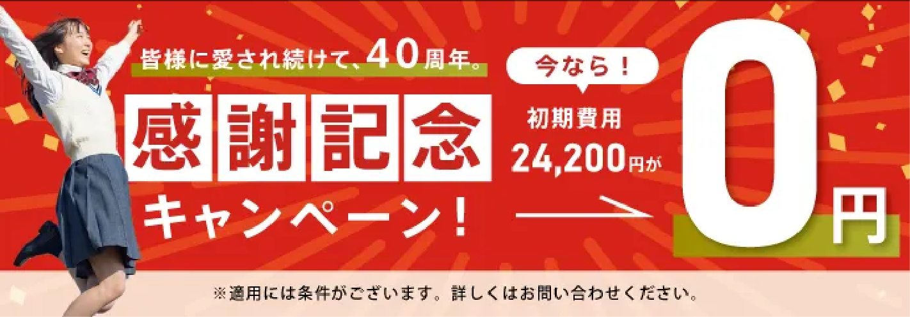
資料請求までわずか1分!
資料請求までわずか1分!
保護者様のみなさま、
こんなお悩みありませんか？
- 子どもが グレーゾーンかも？ と感じる
- 子どもが 発達障がいであると診断 された
- 学習の遅れが原因で 学校に行かなくなってしまった
- 子どもに合った 適切な学習環境がわからない
- 学習の遅れ を少しでも取り戻して進学してほしい
「どうしてうちの子だけ‥」
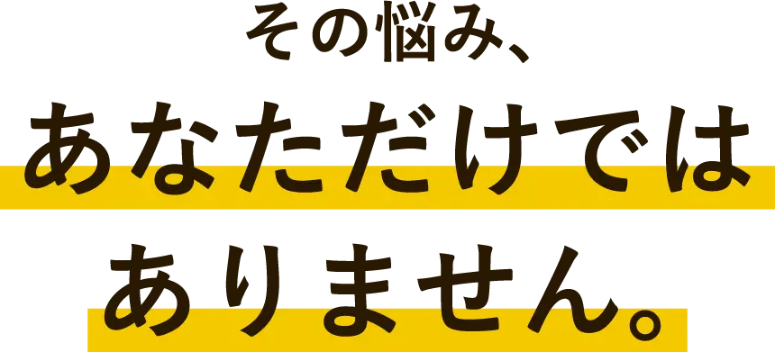
※文部省調査(2022年)より
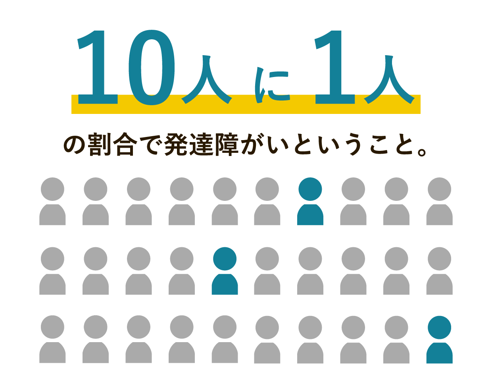
抱え込む必要はありません。
しっかりと「向き合う」こと。

学研の家庭教師に
すべておまかせください !
家庭教師で選ぶなら、学研!
「学研にしてよかった!」という声、
おかげさまで、いま、増えています。

悩みを解決する
学研の家庭教師の5つの強み
家庭教師なんてどこも同じなんて思っていませんか？
いえいえ、学研だからこそできる強みがあります。
不登校改善率90％を誇る
WILL学園と連携
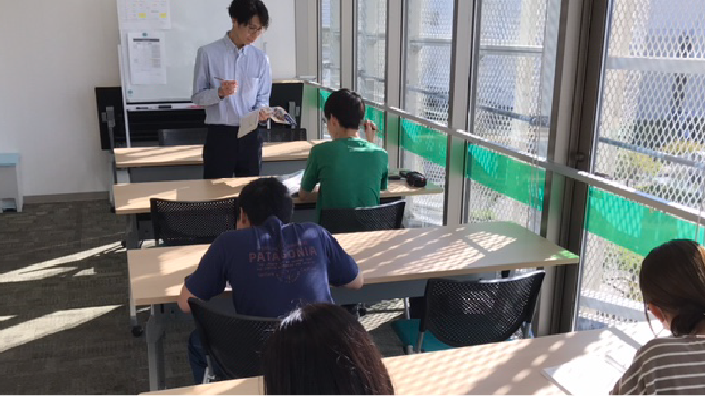
学研グループが運営するWILL学園は、不登校改善率90%の実績があります。その背景には、発達障がい・不登校のお子様に対し、単なる学習支援ではなく、ゲームやアクティビティなどお子様とのコミュニケーションに比重を置いたサポートを行うことで少しずつ信頼関係を築き、お子様の心を前向きに改善してきた学研独自のメソッドがございます。
それらのメソッドを熟知した優秀な講師陣をご家庭に派遣し、お子様を全力でサポートさせていただきます。指導力はもちろんのこと、お子様との接し方や話し方などの研修も徹底して行っております。
指導が開始してからも講師からの報告や、ご家庭への細かな電話連絡（場合によっては家庭訪問も行います）など、その後のフォローもしっかり行っておりますのでご安心ください。
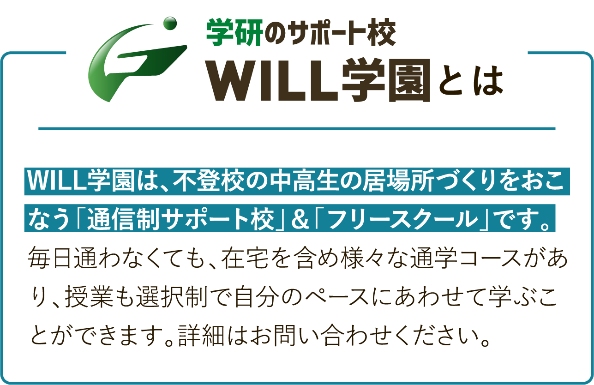
お子様の進路決定率
98.8％
安心の実績
発達障がい・不登校のお子様をお持ちの親御様から一番多くご相談されるのは「このままでは高校に進学できないのでは？」というものです。
義務教育とは違い、高校進学にはお子様の受験意志と試験をクリアしなくてはなりません。
学研の家庭教師では学力面の指導はもちろんのこと、公立・私立高校の普通科受験や単位制、通信制、サポート校に至るまでお子様の状況に合わせた受験情報の提示や対策をとっています。
公立高校に進学を希望される場合、出席日数が重要となります。ただし、学校に通えないお子様の場合、通わなくても出席扱いとしてもらう方法や、受験時に出席日数を項目として取り扱わない高校も存在します。（※お住まいの都道府県によって異なります。詳しくはお問い合わせください）
このような受験情報の収集や受験対策をとることで、不登校のお子様の進学率を高い数字で実現しました。
過去10年間で750名の不登校のお子様（中学生）が高校受験を迎え、その内741名のお子様が高校進学という目標を達成してきました。
また、高校に進学してからのフォローや高校に通えなくなってしまったお子様のフォローも行っております。
発達障がい・不登校のお子様の
支援ノウハウが豊富
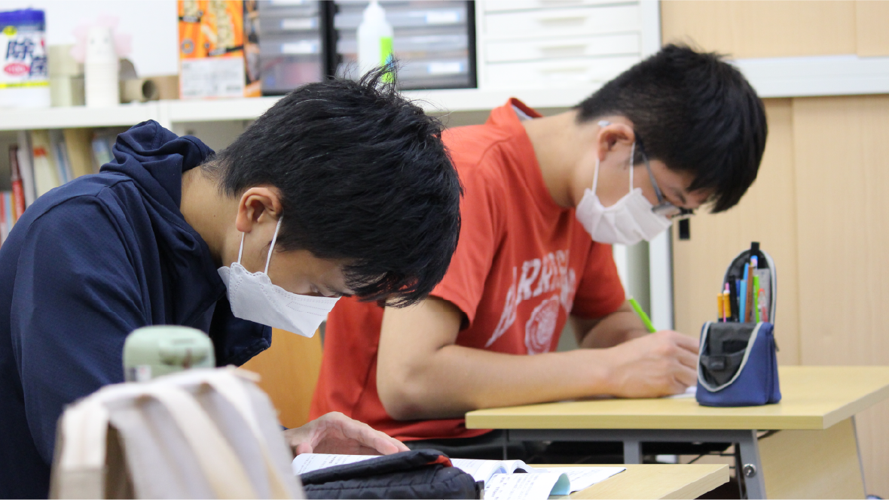
不登校改善率90％・進路決定率98.8％を実現している背景には、WILL学園での長年の経験の積み重ねがございます。
これまでに数多くの発達障がい・不登校のお子様と向き合ってきたことで、学習サポートはもちろん、お子様の心やお悩みへのサポートなど、勉強面だけに限らず生活面・精神面のフォローなど多くの経験を重ねてきました。
それら現場の経験で培った生のノウハウを活かし、発達障がい・不登校のお子様向けに特化した個別指導の家庭教師サービスをご提供しています。

WILL学園の講師も多数在籍
ピッタリの講師をマッチング
学研の家庭教師はお子様の個性に合ったベストな講師を探し出します。
ただ単に勉強を見るだけではなく、親御様には話しにくいお子様の悩みや不安にも親身に耳を傾けます。
勉強ができるだけの講師やお子様の目線に立てない講師は紹介しません。
講師選考の際に大切にしているのは、お子様の状況を理解し一緒に歩むことを約束できるということです。
優しさと熱意に満ち溢れた講師をご紹介しておりますのでご安心ください。
まず、お子様と親御様に講師のタイプや性別、年齢等、細かい希望を出していただき専門スタッフがぴったりの講師を紹介します。
もし万が一希望に合わない講師だった場合は、即時に新しい講師に変更させていただきますのでご安心ください。
講師に対しても細かい研修を徹底しており、勉強の指導力だけではなく、メンタル面のサポート、生活面のサポートに至るまで細かい指導をしています。
講師のご紹介

お子様の個性に寄り添った
完全オーダーメイドの授業
学研の家庭教師では、お子様の個性に合わせて細かなサポートを行います。
一言で発達障がい・不登校といってもその原因や期間は様々です。
学研の家庭教師では、お子様を決まった型にはめ込むのではなく、一人ひとりに合わせたオーダーメイドでの講師選抜や研修、指導方針、接し方など徹底して取り組んでいます。
また、お子様一人ひとりに目標も設定し、講師とともに達成する喜びを伝えていくようにしています。「遅れている分を取り戻したい」「学校に通えるようになりたい」「高校進学をしたい」「人と話すのが苦手になってしまい、その克服をしたい」などその目標もお子様によって様々ですが、ご心配の点は気軽にご相談ください。
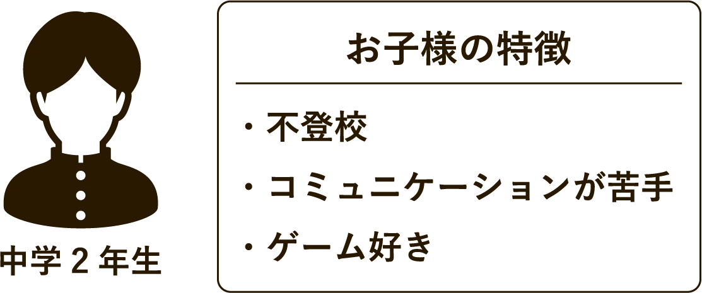
時折、小学校の復習をしていることに対する劣等感を感じている様子が見受けられたので、メンタルケアもしっかりと行いながら前向きに学習に取り組めるようにサポート。
だから、
学研の家庭教師は
選ばれ続けています!
まずは、資料請求からはじめてみませんか？
早く始めれば始めるほど、大きく差は開きます。
資料請求までわずか1分!
コース一覧・料金
学研の家庭教師は、安心の『月謝制』。
高額教材のセット販売などもございません。
-
発達支援・不登校支援
専門コース1時間 5,170 円（税込）～

お子様たちの目標は「学校に復帰したい」、「高校受験に合格したい」、「基礎学力をつけたい」、「社会性を身につけたい」など様々です。
そういった目標に合わせて、一人ひとりに合った計画やプランを考え、お子様と共に実践していきます。
※授業内容のご要望により、料金は変動いたします。
※オンライン授業の料金は上記と異なります。詳細はお問合せください。
一人ひとりにベネフィットする教育を可能にするために
「学研」の家庭教師は講師の質にこだわります
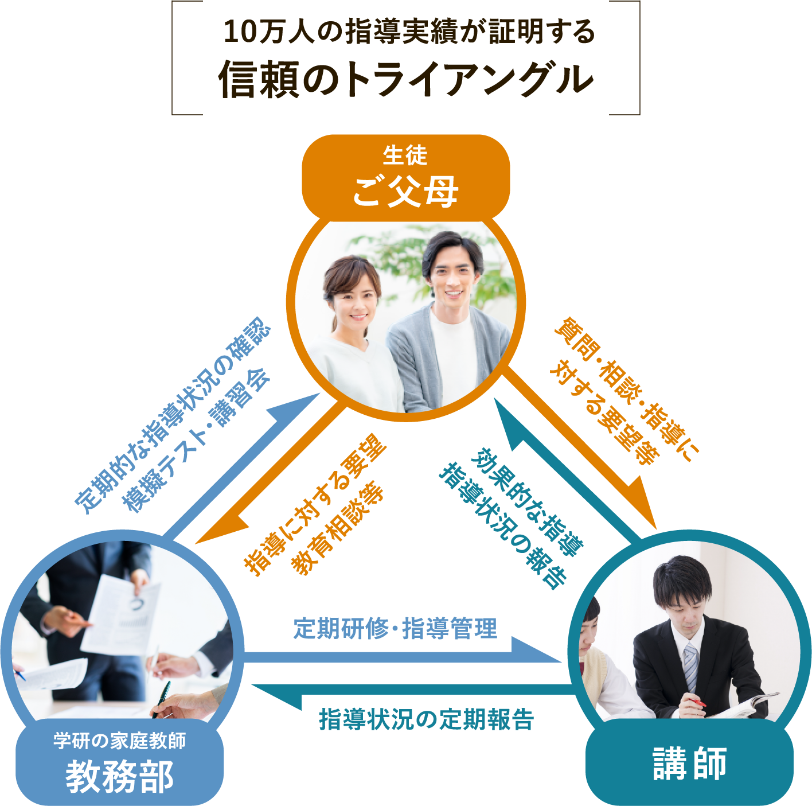
「すべては子どもたちのために」それが私たち、学研・塾グループ共通の想いです。
そして、子どもたちに直に接するのは、先生 ― つまり講師。登録数10万人超の豊富な講師陣から多様なニーズに対応します。
資料請求までわずか1分!
体験指導までの流れ

電話もしくはWEBでご予約

まずは、ご予約をお願いいたします。申し込みフォーム、またはお電話でお気軽にお問い合わせください。ご相談やご質問なども受け付けております。
カウンセリングと
体験指導
（トータル所要時間：約60分）

大切なのは、家庭教師というスタイルがお子様
に合っているかをしっかり判断することです。
「自分に合った勉強のやり方」をみつけることが
成果につながります。
まずは家庭教師の雰囲気を味わっていただき、
お子様の反応を見てください。
※当日のお子様の調子によって、「体験指導」を
お子様や保護者の方からのヒアリングなどに切り替えるこ
ともできます。
学研の家庭教師体験レッスンの
3つのポイント
- ❶ お子様の現在の実力がわかります
- ❷ お子様にぴったりの勉強方法が見つかります
- ❸ 今までの家庭教師との違いがわかります
ご入会を強くおすすめすることはありませんので、
ご安心ください。
よくあるご質問
大切なお子様の勉強方法ですから不安なことも多いはずです。
その他、ご不明な点などございましたら、お気軽にお問い合わせください。
成績についてのご質問
ほんとうに成績は上がりますか？
学研の家庭教師は、教務部に対して毎月の報告を義務付けております。「指導報告書」「定期ミーティング」「個別ミーティング」のシステムにより、お子様の指導状況をチェックし、目標達成までの学習管理を教務部のバックアップにより綿密に行いますので自主学習の習慣と共に学力が向上していきます。
受験対策は大丈夫ですか？
1対1だと競争心がなくなったりはしませんか？
弊社は、受験対策として模擬テストをおすすめしており、 夏期講習・冬期講習も一部教務センターにて実施しております。 偏差値や志望校到達率の把握や単元別の習熟度チェックから、テスト慣れ、 会場慣れに至るまで、受験生のサポートはお任せください。
家庭教師についてのご質問
家庭教師は、アルバイト感覚ではありませんか？
弊社では多くの登録希望家庭教師の中から、学力だけでなく指導力や責任感等の家庭教師としての適正検査「YGPI」を実施して合否を決めております。紹介後も日々の指導状況から毎月の指導報告を義務付けるなど、しっかりとした管理をしておりますのでご安心ください。
本人との相性は合うのでしょうか？
要望や条件を詳しくお伺いし、専門のスタッフが選考にあたり、 ミーティングをした上で紹介しておりますので安心です。弊社は30年以上の実績により家庭教師の登録数も豊富なので、お子様にピッタリの家庭教師を紹介できるシステムとなっております。
家庭教師交代、進路相談などはできるのでしょうか？
大丈夫です。何かありましたら、すぐに弊社へご連絡ください。教務部による管理体制を整えておりますので、担当社員・スタッフが迅速に対応いたします。家庭教師個人ではまかなえないことを全て教務部でサポートさせていただきます。
学び方についてのご質問
特別な教材を購入しないといけないのですか？
弊社は、高額教材のローン契約による販売などは一切ありません。 お子様がお持ちの教科書等で指導を行うことができます。
勉強部屋がないのですが？
ご安心ください。リビングなどでも指導は可能です。また、自宅以外の場所で授業を希望される場合には、近隣の公共施設や家庭教師宅指導もございます。まずは一度ご相談ください。
弊社についてのご質問
テスト前の短期間だけでも申し込みできますか？
テスト前や、夏休みだけなどの短期間もお任せください。目的に応じた指導計画を立て、集中特訓を組むことができます。
病気で休んだり、用事で休んだりすると授業料はどうなりますか？
休んでしまった場合はその分の振替授業を行えます。それによって別途料金がかかることもございません。
やめたくても簡単にやめられないのではないですか？
弊社は1ヶ月前までに退会の申し出をいただければ、 いつでも退会することができます。その場合解約料は必要ありません。 また、退会申告できない場合であっても、1ヶ月分の指導料より高いお金はいただきません。 もちろん、保証金等もございません。